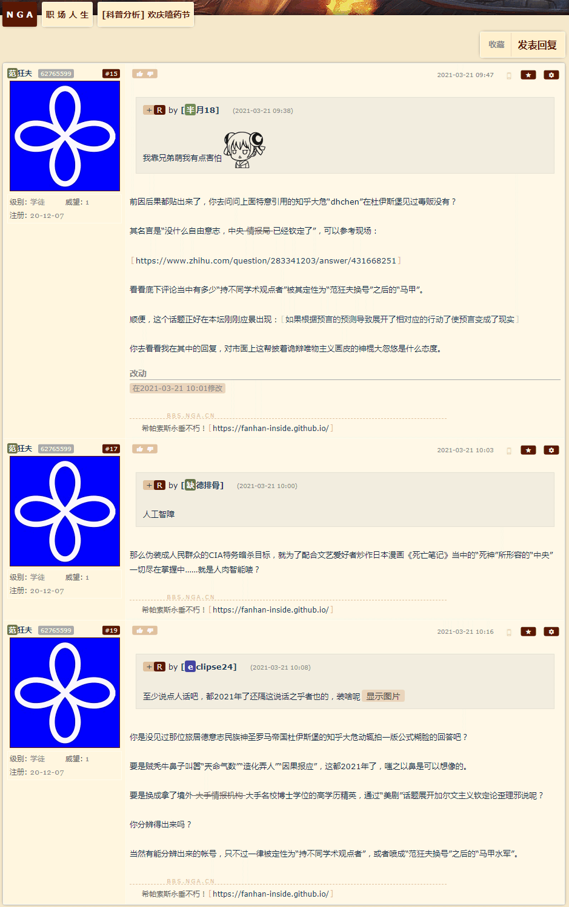
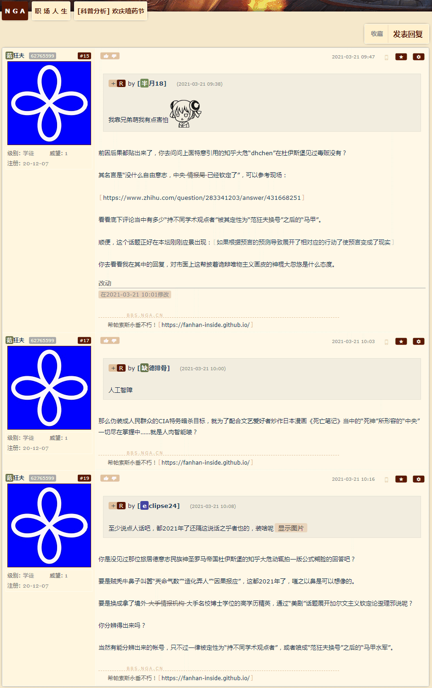

上世纪八十年代，中美两国正式建立外交关系不久，美国阿拉巴马州公民杰克逊等9人代表300多名美国人，通过集体诉讼的方式，向该州联邦地方法院对中华人民共和国起诉，要求偿还1911年前清政府发行的湖广铁路债券欠款。此案一审(1982年)竟然“判决中国政府偿付原告4130余万美元”，在当时闹得沸沸扬扬。随后中美双方展开一段为期2年之久的“法理斗争”，最终美国法院在1984年2月27日撤销了一审判决。
麻烦奉天当局先把大清欠的债还了再说。
民间组织“美国债券持有人基金组织(ABF)”主席毕安卡声称，考虑到通货膨胀、利息和赔偿费用，这批旧中国债券目前值“1万亿美元”。她还强调这相当于中国所持美债规模(截至阿拉斯加回合谈判前夕为1.9万亿美元)，暗示可以借此解决外债问题：“用他们自己的纸给中国付钱，这有什么问题吗？”
麻烦马伯庸的“西肃慎后清国”当局，先把前清的债还清了再说。
最不济，九省通衢那帮活蹦乱跳的娱乐至死の通古斯逗哔，正如本坛名称之来历，武汉奥美、广州网易代理的暴雪游戏之拥趸，对于“湖广铁路”债券，总不至于赖账吧？

 
